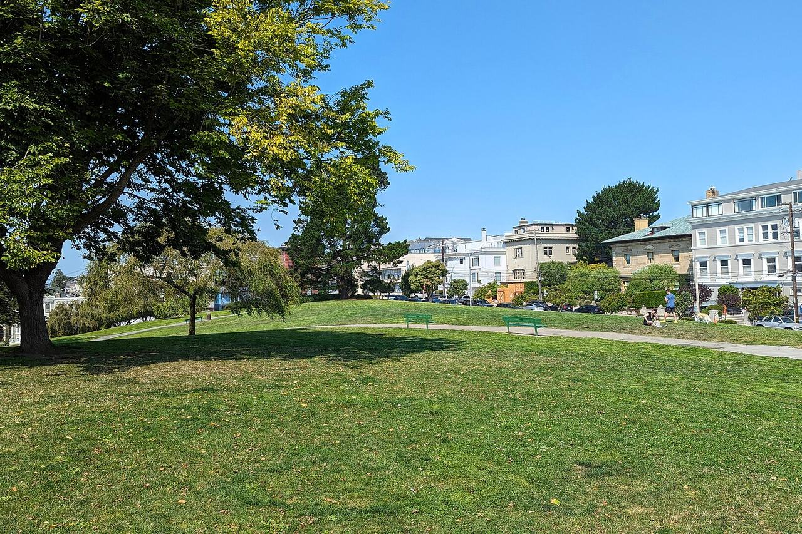

Pacific Heights
An affluent district on the ridge north of Japantown, known for large houses and mansions with views across the bay.

Map
Named buildings and landmarks
-
1

-
2

-
3
-
4
-
5

-
6
-
7
-
8

-
9
-
10

-
11
-
12

Also here: Ortman-Shumate House, Health Sciences Library, Chambers Mansion, Spreckels Mansion, Richard E. Queen House, George W. Gibbs Residence and Caretaker's Cottage, Ellinwood House, Madame C. J. Walker Home for Girls and Women, Saint Brigid Church, Tobin House, The Kinmon Gakuen Building, Japanese YWCA, Clay Theatre, Crocker Old People's Home, John F. Kennedy Towers, Lafayette Apartments, West Side Christian Church, Saint Rose Academy, Temple Sherith Israel, Preston Apartments, First Church of Christ, Scientist, Pacific Laguna Apartments, California Tennis Club clubhouse, CPMC Pacific Heights, Christ United Presbyterian Church, Grosvenor Court, Pacific Heights Townhouses, Cottage Row, Red Cross Building.
Streets documented so far
- Baker Street
1 building, built 1904. - Broadway
6 buildings, built 1900–1940; 2 in the Pacific Heights Historic District. - Broderick Street
1 building, built 1900. - Buchanan Street
2 buildings, built 1900–1912; 2 in the Japantown Community & Cultural Historic District. - Bush Street
2 buildings, built 1900–1916. - California Street
2 buildings, built 1900. - Clay Street
1 building, built 1900. - Cottage Row
6 buildings, built 1900; 6 in the Bush Street Cottage Row Historic District. - Divisadero Street
1 building, built 1905. - Fillmore Street
2 buildings, built 1900–1913; 1 in the Upper Fillmore Neighborhood Commercial Historic District. - Franklin Street
A five-storey 1900 house with an internal theatre floor and a 2025 fire-damage repair. - Gough Street
1 building, built 1917. - Green Street
1 building, built 1924. - Jackson Street
2 buildings, built 1906–1925. - Laguna Street
1 building, built 1900; 1 in the Japantown Community & Cultural Historic District. - Lyon Street
1 building, built 1902. - Normandie Terrace
1 building, built 1940; 1 in the Normandie Terrace Historic District. - Octavia Street
2 buildings, built 1900; 2 in the Japantown Community & Cultural Historic District. - Pacific Avenue
2 buildings, built 1912–1929; 2 in the Pacific Heights Historic District. - Pierce Street
The Casebolt House, an Article 10 individual landmark built for the blacksmith and street car manufacturer Henry Casebolt. - Pine Street
4 buildings, built 1900–1937; 1 in the Japantown Community & Cultural Historic District. - Pixley Street
2 buildings, built 1900–2003. - Polk Street
1 building, built 1908. - Raycliff Terrace
2 buildings, built 1950–1951; 2 in the Raycliff Terrace Historic District. - Sacramento Street
4 buildings, built 1873–1900. - Scott Street
1 building, built 1900. - Steiner Street
The house known as the exterior of the film Mrs. Doubtfire. - Sutter Street
3 buildings, built 1900. - Vallejo Street
4 buildings, built 1905–1950; 2 in the Pacific Heights Historic District. - Van Ness Avenue
6 buildings, built 1917–1988. - Washington Street
The Spreckels Mansion, an Article 10 individual landmark. - Webster Street
1 building, built 1905. - Wilmot Street
1 building, built 1905.
Parks and public spaces
- Alta Plaza Park
Neighborhood park or playground, 12.9 acres. - Bush & Broderick Mini Park
Mini park, 8,712 sq ft. - Cottage Row Mini Park
Mini park, 7,405 sq ft. - Lafayette Park
Neighborhood park or playground, 12.5 acres.
Historic districts here
- Cow Hollow First Bay Tradition Historic District
- Japantown Community & Cultural Historic District
- Pacific Heights Historic District
- Raycliff Terrace Historic District
- San Francisco 1952 Firehouse Bond Act Thematic District (Discontiguous)
- San Francisco Neighborhood Movie Theater Historic District (Discontiguous)
- Upper Fillmore Neighborhood Commercial Historic District
Adjacent neighborhoods
The Marina lies below the north slope and Russian Hill east beyond Van Ness Avenue, with Nob Hill past that. Japantown and the Western Addition adjoin south of Post and Geary, and Presidio Heights continues west across Presidio Avenue.